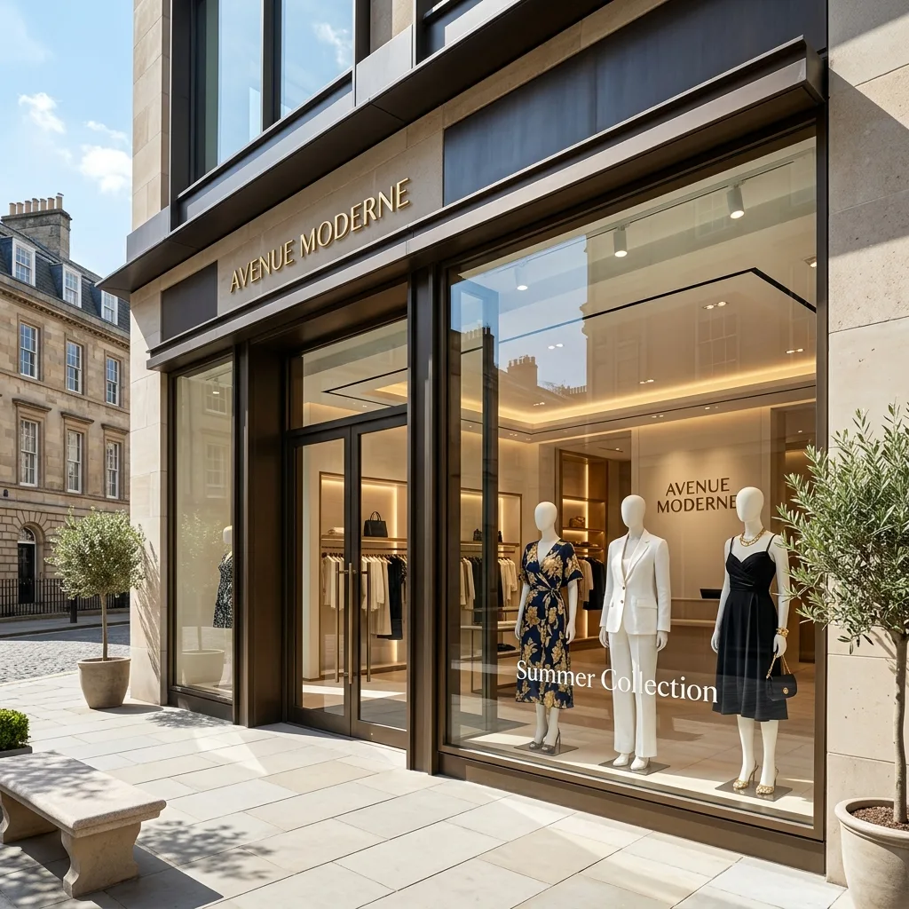
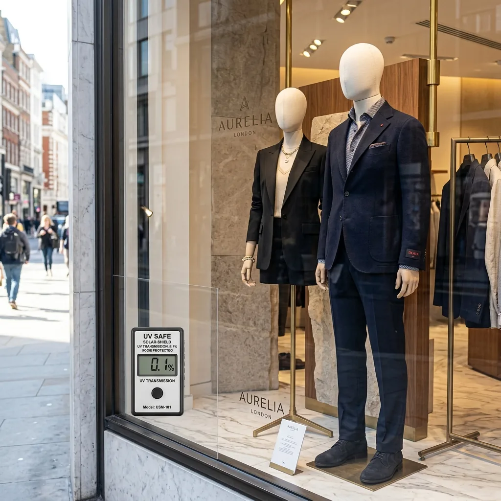
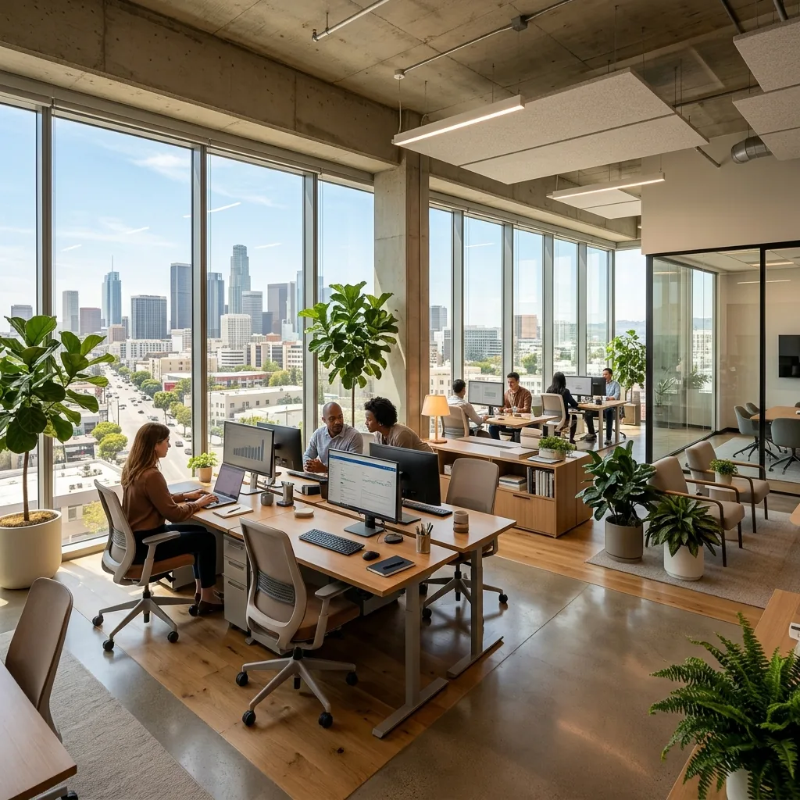

Limiter une cause de décoloration.
La filtration UV de nombreuses références est élevée. Le taux annoncé s’apprécie pour le film et le vitrage concernés, pas pour toute la gamme sans distinction.
Pose de film anti-UV pour vitrines & intérieurs
Produits en vitrine, meubles ou objets exposés : les UV participent à leur vieillissement. Nous vous aidons à choisir une protection adaptée, en gardant à l’esprit la visibilité, la lumière et les autres causes de décoloration.

Préserver la présentation.
Mieux limiter l’exposition aux UV.
Jusqu’à 99 % des UV rejetés selon film et vitrage.
Une vitrine reste un outil de présentation.
UV, chaleur et lumière se raisonnent ensemble.
Le soleil n’agit pas d’une seule façon
Le film anti-UV agit sur une partie du rayonnement qui traverse le vitrage. Ce bénéfice est utile pour des surfaces ou produits sensibles, mais il n’efface pas toutes les causes de vieillissement.
La filtration UV de nombreuses références est élevée. Le taux annoncé s’apprécie pour le film et le vitrage concernés, pas pour toute la gamme sans distinction.
Nous prenons en compte la présentation de vos produits et la vue depuis la rue. La teinte et les reflets se choisissent avec l’identité de la vitrine.
Certaines solutions associent contrôle solaire et filtration UV. Le besoin de chaleur se distingue du seul besoin de limiter les UV.
Comprendre le contrôle solaire ↗Boutiques, showrooms, maisons
Une boutique peut vouloir limiter les UV sans masquer les articles exposés. Dans une maison, l’enjeu peut être de protéger un parquet ou un meuble en conservant une vue agréable.
Le choix commence par le type de vitrage, l’exposition et la sensibilité des objets. Nous recherchons le rendu cohérent avec votre usage plutôt qu’un chiffre isolé sur une fiche.


Une explication utile avant le devis
La décoloration dépend aussi de la lumière visible, de la chaleur, des matières et de la durée d’exposition. Filtrer les UV ne garantit donc pas de conserver indéfiniment toutes les couleurs.
Pour des objets particulièrement sensibles, nous discutons également des conditions de présentation et des contraintes de conservation. Le film s’intègre à une réponse plus large.
Conseiller, fournir, poser
Une pièce trop chaude, des reflets, une vitrine exposée ou un besoin d’intimité : nous mettons des mots précis sur le résultat attendu.
Composition du verre, orientation, dimensions, ombrages et conditions d’accès : ces éléments orientent la sélection et la face de pose.
Nous présentons le rendu, les bénéfices, les limites et le périmètre de pose. Le devis correspond à votre projet et à la solution retenue.
Préparation du support, découpe et application selon les prescriptions du fabricant. Nous transmettons les consignes de séchage et d’entretien.
Votre installateur en Auvergne-Rhône-Alpes
Une vitrine, un parquet ou un objet exposé : décrivez le vitrage et les éléments concernés. Nous étudions la protection et son rendu avant la pose.
Des réponses pour décider
Non. La filtration UV traite une cause du vieillissement ; la lumière visible, la chaleur, les matériaux et la durée d’exposition interviennent aussi. Nous ne promettons pas une conservation absolue de toutes les couleurs.
Il existe des solutions très claires et d’autres plus teintées. Le rendu et la transmission lumineuse se choisissent avec le vitrage et votre besoin de présentation.
Cela dépend du produit. Filtrer les UV et limiter l’énergie solaire entrante sont deux fonctions distinctes. Certaines références combinent les deux, à vérifier dans la préconisation.
C’est un usage à étudier pour le mobilier, les parquets et les objets exposés. La composition du vitrage, l’exposition et le rendu souhaité guident le choix.
Nous étudions les projets en Auvergne-Rhône-Alpes, notamment à Valence, Lyon, Grenoble et Saint-Étienne. Le devis précise la solution et le périmètre de pose.
Un besoin, plusieurs façons d’y répondre
Guide maison · exposition solaire
Comprenez le rôle des UV et pourquoi filtration UV et maîtrise de la chaleur ne sont pas toujours la même fonction.